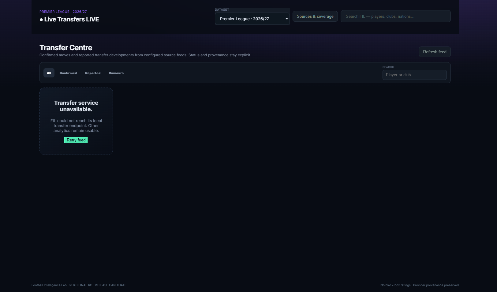
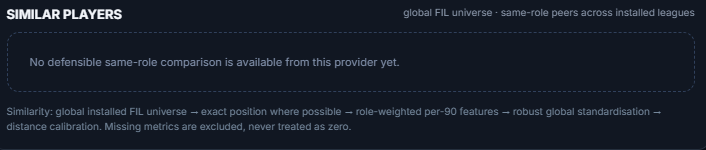

Player Lab
Per-90 production, Player DNA, spatial evidence, market-value context and global same-role comparisons.
Global similaritysame-role peers
86.2%Role-aware evidencemissing data excluded
✓Player analysis, scouting, recruitment and team intelligence built from real provider data — with every derived metric designed to be explainable.
Compare the evidence, not a made-up overall.
Production · creation · progression · defensive contribution
Shared real metrics → role weighting → robust standardisation → distance calibration.
FIL connects player, team, match and recruitment analysis without hiding the evidence behind a single proprietary score.
Per-90 production, Player DNA, spatial evidence, market-value context and global same-role comparisons.
Search by role, minutes and transparent metric weights. Build a shortlist from evidence, not reputation.
Separate role match from transfer feasibility and understand why a candidate survives each filter.
League-relative team profiles with direct 1st–20th rankings and contextual tactical indicators.
A worldwide youth scouting universe with career evidence, market context and FIL analytics where available.
See where a team actually ranks against its league rather than decoding abstract percentiles.

If FIL derives something, the method should be understandable. Missing metrics stay missing. Provider provenance stays attached.
Provider-recorded football data enters the platform.
Identity, positions and metrics are aligned across datasets.
Per-90, role and league context make comparisons defensible.
The interface shows what drove the result.
“No black-box ratings.”
FIL is built to support football decisions — not replace them with an unexplained number.
The FIL product direction starts with 2025/26 as its baseline, 2026/27 as the current season and a dedicated World Cup 2026 intelligence layer.

FIL searches the installed football universe, normalises tactical roles and compares shared real metrics. Missing evidence is excluded — never silently converted to zero.
Built for people who want to know why the numbers say what they say.
Enter Football Intelligence Lab ↗